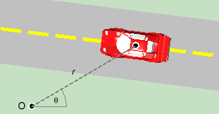

Contents
Angular velocity as a scalar quantity. The following diagram illustrates the definition of the (scalar) angular velocity of a moving object.

Figure 1
A car is moving in a straight line along a road. The center of the car marks the car's position. From a fixed point O a dashed line has been drawn to the car. The car's position can be defined by the length r of this line and the angle q between this line and a horizontal reference direction pointing to the right. The pair of coordinates (r,q) is called the car's polar coordinates.
The time-rate-of-change of q is called the car's angular velocity. For a review of the concept of "time-rate-of-change" go either to the link under Related Items or to Term'logy & Not'n/Time-rate-of-ch'ge.
The time-rate-of-change of q is denoted dq / dt. It is customary to denote this quantity by the symbol w (Greek letter: read "omega"). Thus, the angular velocity is
w = dq / dt .
It is customary in dealing with angular velocity to measure angles in radians. The corresponding SI-unit of the angular velocity is rad/s. For a review of the radian measure of an angle, go either to the link "Angle" under Related Items or to Kinematics/Angle/Get Information.
Comment 1. The angular velocity is positive when the angle q is increasing, i.e., when the dashed line from the reference point O to the moving object is rotating in the positive (counter-clockwise) sense. It is negative if the dashed line is rotating in the negative sense.
Comment 2. The value of w depends on the location of the reference point O. The farther the point O is away from the path of the object, the smaller is w. This is different from the velocity. Velocity is equal to the time-rate-of-change of the position vector, but changes in the position vector do not depend on the origin from which the position vector is taken.